매쓰 먼데이 —
각자의 강점과 약점을 찾은 하루 🔢
Math Monday. Today was not about racing ahead — it was about finding out exactly where everyone is. We spent the day narrowing down each student's individual strengths and weaknesses in math, with everyone taking part at their own age and level.

🎯 Monday Math Jeopardy Six categories, 100 to 700
A diagnostic works much better when it does not feel like a test. So the whole thing became a game board: six categories, point values from 100 up to 700, and teams picking their own way through it.
Because students choose their own squares, the board quietly does the diagnostic work for us. Who reaches straight for the 700s in multiplication? Who circles the fractions column and never lands on it? By the end of the morning the pattern is on the board for everyone to see.
And yes — the teams named themselves Calculators and Humans. We are told the rivalry is now permanent.
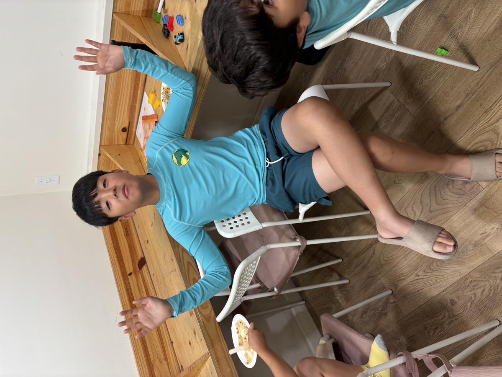
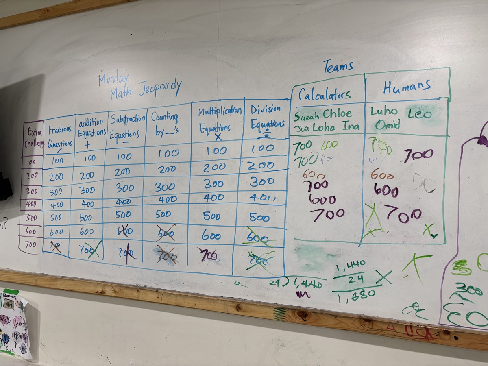
📏 Everyone at Their Own Level Same room, different sheets
After the game came the individual work — and this is where "according to their age and level" stops being a phrase and becomes a stack of different papers. The younger students worked on counting and number sense; the older ones on multi-digit operations.
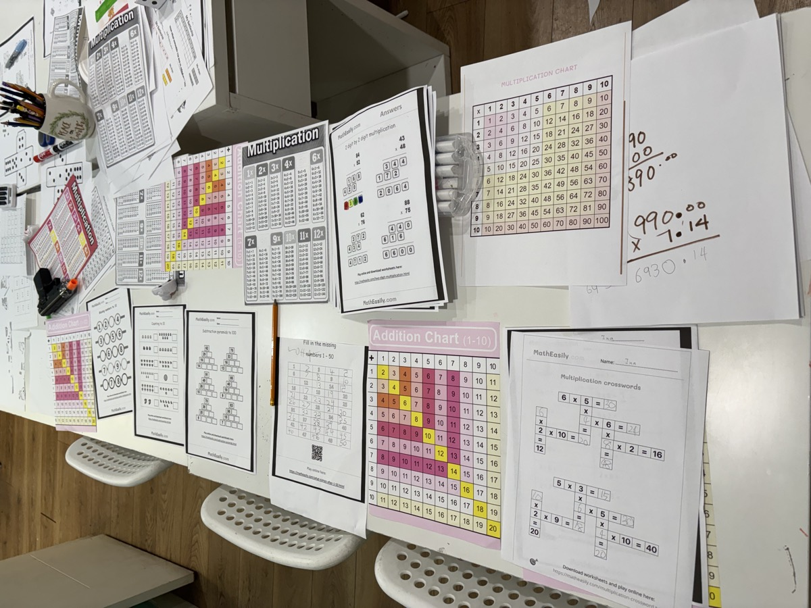
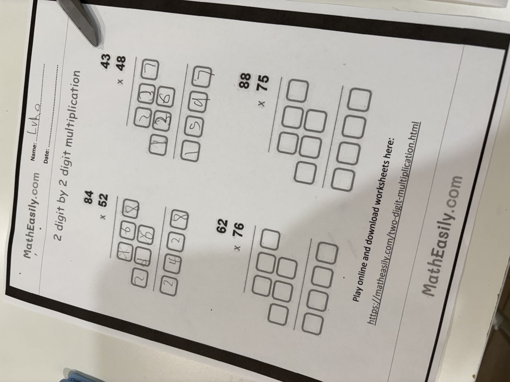
Why we do this on day one of the week
You cannot fix what you have not found. Knowing precisely which operation, which vocabulary word, or which step is missing turns the rest of the week from general practice into targeted work.
🎲 Math You Can Hold A plate, a net, a pair of dice
Not all of it was on paper. A paper plate divided into equal sections, filled with counted groups of coloured dots, turns counting by and fractions of a whole into something you can point at. And a cube net — cut out, folded and taped — turns a flat shape into a die you can actually roll.
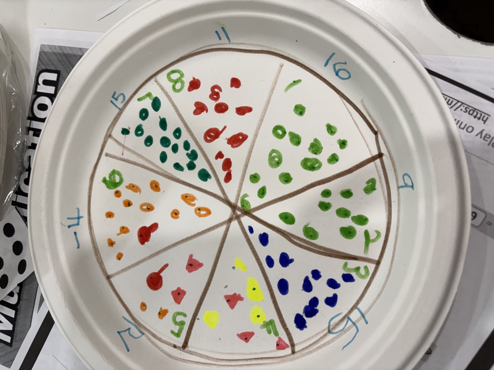
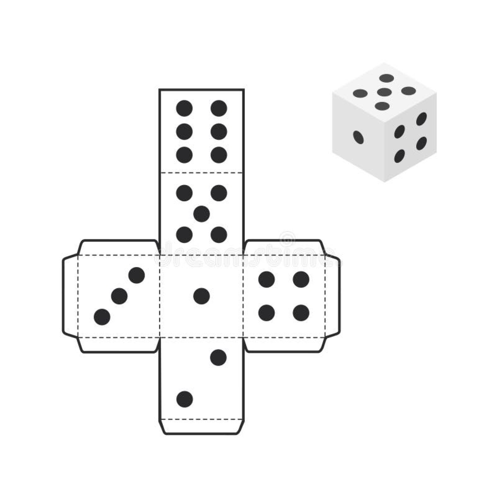
The teacher's note for the day was honest about where we are: there is a lot of room for improvement — and that is exactly the point of finding it now.
“We spent today narrowing down everyone's individual strengths and weaknesses in math, and everyone participated according to their age and level. There is a lot of room for improvement and overcoming challenges, as well as increasing math vocabulary for every age and level.” ❤️
🍚 Lunch Fried rice & kimchi
Lunch was a big pan of vegetable fried rice with freshly cut kimchi on the side — served, plated and gone in short order.
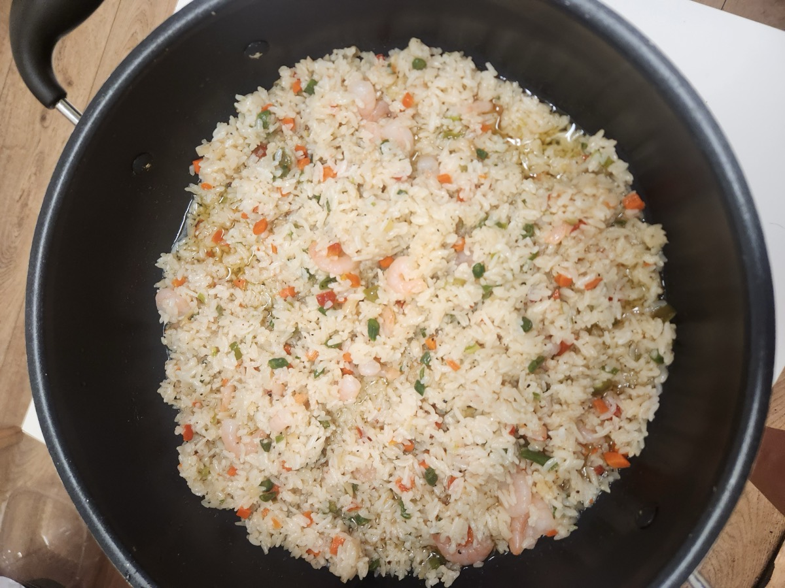
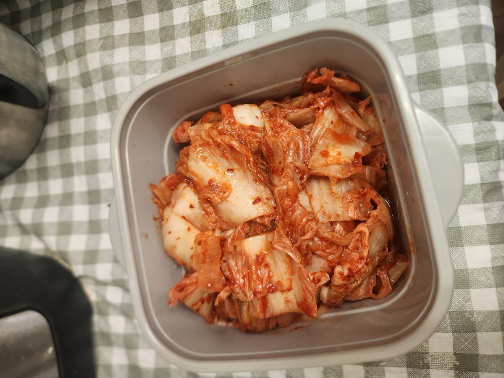
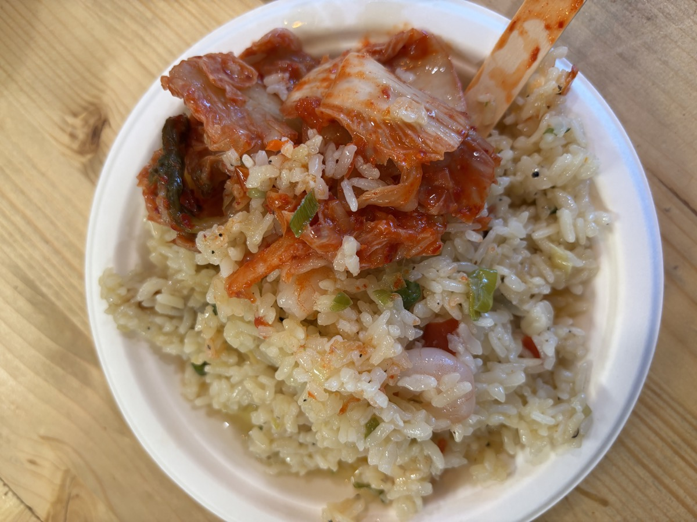
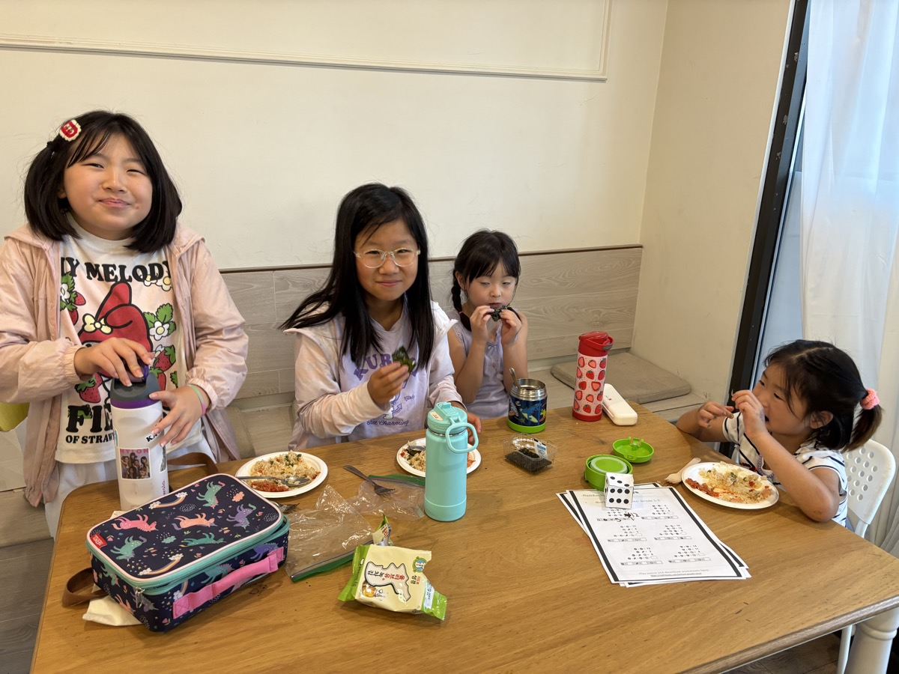
💦 Afternoon Outside Pool & playground
After a morning of concentrating, the afternoon went outdoors — the pool first, then the playground.
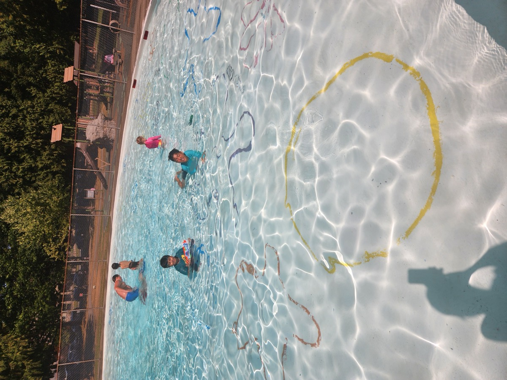
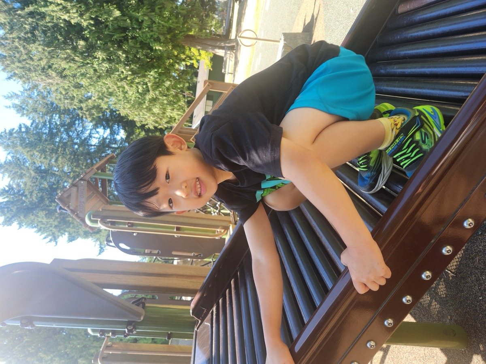
Tomorrow: science. We are making lava lamps with kid-safe chemistry. Ask them tonight what they think will happen.
Math vocabulary, one operation at a time — and a rivalry between Calculators and Humans that shows no sign of settling. Happy afternoon, everyone! ❤️